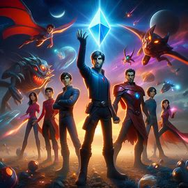

Az első pillanat
Az év 3030-ban, a Földön élő fiatal feltaláló, Alex, egy nap véletlenül felfedez egy rejtélyes eszközt, mely egy titokzatos galaxis kapuja, és amint átlép rajta, egy elképesztő új világba kerül, ahol lézerfegyverekkel felszerelt űrhajók keringenek és csodálatos idegen lények népesítik be a különböző bolygókat.
A találkozás
Alex hamarosan találkozik egy kis csapatnyi különleges képességekkel rendelkező űrhajós szövetséggel, akik egy titokzatos varázslatos kristály hatalmára vadásznak, mely az egész galaxis sorsát meghatározhatja.
A közös kezdet
A csapat elindul a kalandos küldetésre, ahol Alex olyan képességekre tesz szert, amelyek korábban elképzelhetetlenek voltak számára, és közben olyan izgalmas bolygókat fedez fel, amelyek tele vannak veszélyekkel és meglepetésekkel.
A felismerés
Amikor a csapat egyre közelebb kerül a varázslatos kristályhoz, rájönnek, hogy egy gonosz űrkirály, Zorgon, is ugyanarra a célra hajt, és most Alexnek és társainak nemcsak egymásért, hanem az egész galaxisért kell harcolniuk.
A harc
Amikor a csapat egyre közelebb kerül a varázslatos kristályhoz, rájönnek, hogy egy gonosz űrkirály, Zorgon, is ugyanarra a célra hajt, és most Alexnek és társainak nemcsak egymásért, hanem az egész galaxisért kell harcolniuk.
Történet vége
Visszatérve a Földre, Alex az új barátaival megosztja a fantasztikus kalandjait, miközben a titokzatos galaxis kapuja bezárul mögöttük, és a különleges élmények emléke örökké él a fiatal feltaláló szívében.